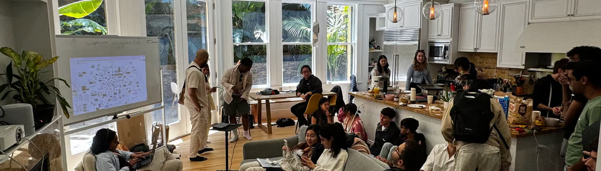

Playspace is a get-together and coworking session for the kind, nerdy, and creative.
Come if you like to learn to draw from youtube videos, create websites for friends, play music, write blog posts, compose songs, arrange flowers, research distributed systems — and everything in between. Playspace is for you to explore what makes your world sparkle :)
Philosophy
Play allows us to create and share in ways that competitive environments disincentivize. We're a group of people that values exploring, learning, and building based on curiosity and intrinsic motivation.
Part of the magic of it is that it's a very high-trust environment where people can fully be themselves and be comfortable exploring new facets of themselves. Although Playspace is open invite, we ask that you hold a respect for the space and the people within it. Everyone who attends Playspace is, in many ways, a host of the space as well.